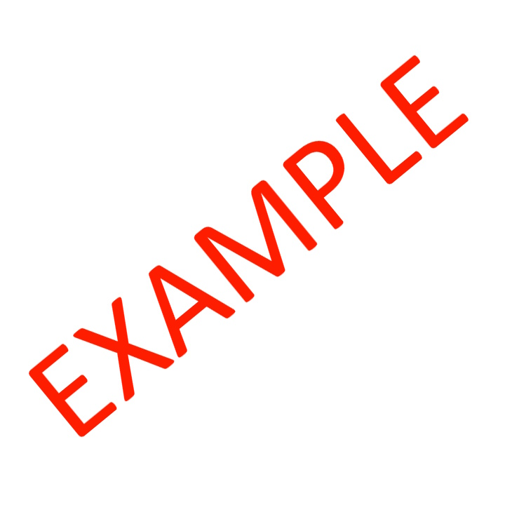

Hello!
I'm Austin, a versatile multipassionate pursuing a BS in Electrical Engineering at Georgia Tech.
I consider myself a life-long learner motivated by a desire to understand, inspire, and assist others.
When I'm not studying, you can find me exploring new hobbies, creating content, or spending time with friends and family (IDONTLIKETHISLINE).
